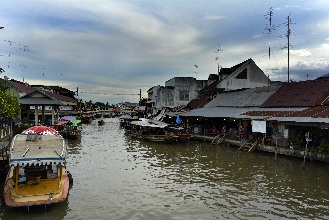
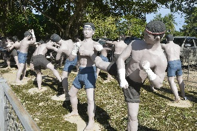
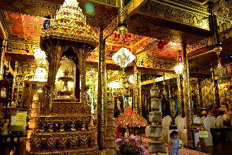

Amphawa (อัมพวา)
 Cidade localizada há 63km à oeste de Bangcoc, o que a torna uma conveniente "day trip" partindo da capital.Durante o período Ayutthaya, a área da cidade era conhecida como Khwaeng Bang Chang (ou apenas Bang Chang) e era uma pequena comunidade agrícola e comercial.
O nome Bang Chang significa "lugar dos elefantes", em referência ao fato de que a região costumava ser habitat de várias manadas de elefantes selvagens e era também um refúgio para os elefantes brancos.
Já o atual nome Amphawa vem do canal de mesmo nome que corre pela cidade.
Afirma-se que a palavra amphawa significa "floresta de mangas", e refletia as condições da área nos tempos em que havia bastante pés de manga na região. Tanto que o selo da cidade é um elefante em uma floresta repleta de mangas.
No início do período Rattanakosin, a então chamada Bang Chang recebeu o "apelido" de Suan Nok (jardim externo), em referência à Suan Nai (jardim interno) ou Bangcoc. Isso porque estas cidades tinham um terreno bastante similar, que foi tomado por pomares e onde haviam vários canais fluindo.
Naqueles tempos, o território de Bang Chang se extendeu para partes das cidadesde de Bang Khonthi, Samut Songkhram e Damnoen Saduak (que atualmente faz parte da província de Ratchaburi).
Em 1766, o rei Loetla Nabhalai (Rama II) nasceu na área. Seu pai era governante da província de Ratchaburi na época.
No local de seu nascimento há agora um parque memorial com 4 construções no estilo tradiocional da região, exibindo a arte e o estilo de vida da época.
Seu maior destaque é um mercado flutuante, que passa por uma área repleta de cafés vintage, restaurantes e lojinhas vendendo artesanato, doces, etc.
Além do mercado, chamam a atenção dos visitantes as vistas ao longo do rio e uma atmosfera mais "antiga", até mesmo nostálgica, além do parque memorial em homenagem ao rei Rama II.
A cidade tem uma área total de 170.164km² e cerca de 55.000 habitantes, o que a torna a maior cidade da província de Samut Songkhram.
Como chegar à Amphawa
A maioria dos visitantes estrangeiros chega à cidade através de uma day trip saindo de Bangcoc. Você pode agendar essas tours através do seu hotel, ou caso eles não ofereçam esse serviço, através de alguma das inúmeras agência de viagens de Bangcoc. Na Khao San Road não será um problema encontrar uma day trip para Amphawa.Se quiser economizar e fazer as coisas por conta própria, você pode pegar um ônibus no Southern Bus Terminal, mas para isso você deve pegar primeiro um ônibus para Samut Songkhram, e lá pegar outro ônibus ou um songthaew para Amphawa.
Mas atenção! Os ônibus e a maioria dos songthaews não têm indicadores de seus destinos em inglês! Então se informe bem antes de pegar estes transportes para não acabar indo para outro lugar.
Pegando o transporte certo, o trajeto até o mercado flutuante deve levar em torno de 15 minutos, e o local de descida é bastante óbvio. Não se preocupe, você vai perceber.
Se locomovendo na cidade
Se locomover pela cidade é muito fácil, já que você pode praticamente atravessar a cidade apenas caminhando. Uma vez na cidade, é fácil e rápido chegar onde quiser, pois sua área urbana é bem pequena, e hoje em dia com Google Maps, se localizar ficou bem mais fácil.As atrações de Amphawa
Mercado Flutuante de Amphawa
O mercado está localizado no mesmo local de um antigo mercado flutuante, que ficou inativo por mais de 10 anos.
Felizmente, a prefeitura e a Universidade Chulalongkorn, de Bangcoc, ajudaram os moradores locais a restaurar as lojas e as casas às margens do rio e revitalizaram o mercado.
A grande vantagem desse mercado flutuante é que ele é menos turístico, e portanto mais autêntico aos costumes locais. Isso faz com que seja mais tranquilo do que o Mercado Flutuante de Damnoen Saduak.
Nos pequenos botes dos vendedores você encontra uma grande variedade de frutas, sobremesas, chapéus e artigos locais.
Os vendedores estacionam seus barcos ao longo das 2 margens do canal, prontos para preparar uma tijela de sopa de macarrão, mingau de arroz, frutas, etc.
Aqui, barcos saem em intervalos regulares para uma tour pelos canais, e a noite há tours para avistar vagalumes.
Felizmente, a prefeitura e a Universidade Chulalongkorn, de Bangcoc, ajudaram os moradores locais a restaurar as lojas e as casas às margens do rio e revitalizaram o mercado.
A grande vantagem desse mercado flutuante é que ele é menos turístico, e portanto mais autêntico aos costumes locais. Isso faz com que seja mais tranquilo do que o Mercado Flutuante de Damnoen Saduak.
Nos pequenos botes dos vendedores você encontra uma grande variedade de frutas, sobremesas, chapéus e artigos locais.
Os vendedores estacionam seus barcos ao longo das 2 margens do canal, prontos para preparar uma tijela de sopa de macarrão, mingau de arroz, frutas, etc.
Aqui, barcos saem em intervalos regulares para uma tour pelos canais, e a noite há tours para avistar vagalumes.
Local: distrito de Bang Chang, Amphawa. A rua Prachaset tem uma ponte sobre o rio.
Como chegar: você pode pegar uma day trip em Bangcoc, ou ir de ônibus + songhthaew por conta própria, como já explicado anteriormente nesta página. Se for de ônibus, há alguns songthaews azuis que fazem o trajeto de ida e volta entre Samut Songkhran e Amphawa, com Amphawa escrito em alfabeto ocidental na lateral. Eles passam pela Rodovia 325 por 6km, antes de virarem à esquerda em uma rotatória e voltarem.
O mercado fica há uns 500m dali.
Horário: de Sexta à Domingo, das 14:00 às 20:00. Voltar à lista
Como chegar: você pode pegar uma day trip em Bangcoc, ou ir de ônibus + songhthaew por conta própria, como já explicado anteriormente nesta página. Se for de ônibus, há alguns songthaews azuis que fazem o trajeto de ida e volta entre Samut Songkhran e Amphawa, com Amphawa escrito em alfabeto ocidental na lateral. Eles passam pela Rodovia 325 por 6km, antes de virarem à esquerda em uma rotatória e voltarem.
O mercado fica há uns 500m dali.
Horário: de Sexta à Domingo, das 14:00 às 20:00. Voltar à lista
Wat Bang Kung
Seu principal destaque é uma capela no meio de uma grande figueira chamada Bot Prok Po.
Há uma grande imagem de Buda nessa capela, que fica praticamente dentro das raízes da árvore!
Outro destaque são as estátuas de lutadores de Muay Thai cercando uma construção do complexo do templo. O templo está no complexo de Khai Bang Kung, uma famosa base naval da História tailandesa, que data do final do período Ayutthaya. A base ficou deserta por mais de 200 anos e acabou virando um campo de escoteiros em homenagem ao rei Taksin, figura em uma estátua no local.
Não muito longe da base você pode agendar uma tour de bote pelos canais da cidade.
Há uma grande imagem de Buda nessa capela, que fica praticamente dentro das raízes da árvore!
Outro destaque são as estátuas de lutadores de Muay Thai cercando uma construção do complexo do templo. O templo está no complexo de Khai Bang Kung, uma famosa base naval da História tailandesa, que data do final do período Ayutthaya. A base ficou deserta por mais de 200 anos e acabou virando um campo de escoteiros em homenagem ao rei Taksin, figura em uma estátua no local.
Não muito longe da base você pode agendar uma tour de bote pelos canais da cidade.

Local: 4013 Rural Road, distrito de Bang Kung, Bang Khonthi, região de Amphawa.
Voltar à lista
Wat Chula Manee
As principais atrações do templo são sua riquíssima decoração dourada em estilo tailandês antigo, a maior parte parte feita em madeira teca, e um monge
mumificado.
A parte dos fundos do templo oferece boas vistas do canal.
Embora seja um templo muito bonito, não é necessariamente uma atração imperdível, mas vale a visita caso você esteja por perto, afinal não é sempre que você pode ver um monge mumificado exibido ao público, não é?
A parte dos fundos do templo oferece boas vistas do canal.
Embora seja um templo muito bonito, não é necessariamente uma atração imperdível, mas vale a visita caso você esteja por perto, afinal não é sempre que você pode ver um monge mumificado exibido ao público, não é?

Local: no final da rua Pracha Uthit. Fica em um canal há menos de 5km do mercado flutuante. Você pode pegar os
songthaews 604, 605 ou 467, que passam próximo à rua que leva até o templo. Avise ao motorista dizendo "wat tchula maníi".
Ele vai entender e te avisar quando for pra descer.
Entrada: gratuita. Voltar à lista
Ele vai entender e te avisar quando for pra descer.
Entrada: gratuita. Voltar à lista
Wat Phummarin Kudithong (ou Wat Kummarin Kudeethong)
Templo construído em 1888 durante o reinado de Rama V. O templo é famoso pela crença popular de que ele abriga a Kudithong, ou o residência do monge dourado.
Na verdade, essa construção encontra-se no Wat Bang Li e é dedicada aos pais da rainha Amarin Tramart, esposa de Rama I.
No templo há um museu com exibições sobre a região.
No templo há um museu com exibições sobre a região.
Local: Ban Phummarin, distrito de Suan Luang.
☎: 034751492 ou 014090567 Voltar à lista
☎: 034751492 ou 014090567 Voltar à lista
Wat Amphawan Chetiyaram
Templo construído no antigo assentamento da rainha Amarintramart, esposa do rei Rama I e mãe do rei Rama II.
O primeiro rei dedicou essa área à construção de um templo e o nomeou Wat Amphawa.
Dentro do ubosot há murais pintados durante esse período, com pinturas ilustrando a história e as atividades de Rama II, que nasceu na região, o estilo de vida dos moradores locais no passado e histórias de Sang Thong, Kri Thong, I-Nao e Kawi, literaturas que foram escritas pelo rei Rama II.
O primeiro rei dedicou essa área à construção de um templo e o nomeou Wat Amphawa.
Dentro do ubosot há murais pintados durante esse período, com pinturas ilustrando a história e as atividades de Rama II, que nasceu na região, o estilo de vida dos moradores locais no passado e histórias de Sang Thong, Kri Thong, I-Nao e Kawi, literaturas que foram escritas pelo rei Rama II.
Local: distrito de Bang Chang.
Voltar à lista
Museu Ban Pinsuwan Benjarong
Criado por Wirat Pinsuwan, dono da Pinsuwan Benjarong, a maior fabricante de benjarong na cidade.
Benjarong é um estilo de cerâmica tailandesa pintado em 5 cores principais. Esse estilo de cerâmica possui uma longa história desde o período Ayutthaya.
Hoje em dia, o benjarong ainda é produzido, mas em um estilo mais moderno.
O museu apresenta algumas peças de cerâmica do passado e dos tempos atuais.
É possível também visitar a fábrica e ver o processo de criação das peças.
Benjarong é um estilo de cerâmica tailandesa pintado em 5 cores principais. Esse estilo de cerâmica possui uma longa história desde o período Ayutthaya.
Hoje em dia, o benjarong ainda é produzido, mas em um estilo mais moderno.
O museu apresenta algumas peças de cerâmica do passado e dos tempos atuais.
É possível também visitar a fábrica e ver o processo de criação das peças.
Wat Petchsamut Worawihan (ou Wat Baan Laem)
Templo bastante visitado pelos locais graças à imagem de Luang Pho Baan Laem, considerada a mais sagrada da cidade.
Foi construído durante o reinado de Prasart Thong, no período Ayutthaya.
Originalmente o templo chamava-se Wat Sri Champa.
Em 1764, quando os invasores birmaneses destruíram a área de Pechaburi, as pessoas de lá se mudaram e reestabeleceram uma nova cidade, chamando essa área de Baan Laem.
Há também um museu dos monges com imagens, amuletos de vários períodos, artefatos e um antiquário.
Na frente do templo você pode marcar um passeio de bote pelo rio Mae Klong até o Parque Memorial do Rei King Rama II e ao Mercado Flutuante Damnoen Saduak.
Foi construído durante o reinado de Prasart Thong, no período Ayutthaya.
Originalmente o templo chamava-se Wat Sri Champa.
Em 1764, quando os invasores birmaneses destruíram a área de Pechaburi, as pessoas de lá se mudaram e reestabeleceram uma nova cidade, chamando essa área de Baan Laem.
Há também um museu dos monges com imagens, amuletos de vários períodos, artefatos e um antiquário.
Na frente do templo você pode marcar um passeio de bote pelo rio Mae Klong até o Parque Memorial do Rei King Rama II e ao Mercado Flutuante Damnoen Saduak.
Local: distrito de Baan Laem, Mae Klong, região de Amphawa.
Voltar à lista
Centro de Preservação dos Gatos Tailandeses
Centro criado por Preecha Pukkabutr, que gostava muito de gatos e queria preservar o gato real tailandês, raramente visto no país.
Ele criou o centro em 1986 e agora possui mais de 60 gatos.
Historicamente, haviam 23 raças de gatos reais tailandeses, mas agora existem apenas 4 (Vichianmas, Males, Supaluck e Konja).
Não é exatamente uma atração turística, mas caso você goste de gatos, porque não conhecer algumas raças originárias da região?
IMPORTANTE! Não visitei este local, portanto não posso afirmar como são tratados os animais. Sou cético com atrações que utilizem animais, mas neste caso, não trata-se de uma atração para turistas, e sim um centro de abrigo e preservação. Desconheço as práticas do local, como por exemplo a metodologia dos tratamentos e dos cuidados. Os animais são tratados e soltos para viverem em liberdade novamente?
São reproduzidos apenas para viverem presos?
As condições são satisfatórias?
São perguntas que valem a pena ser feitas e podem justificar ou não a visita ao local.
Ele criou o centro em 1986 e agora possui mais de 60 gatos.
Historicamente, haviam 23 raças de gatos reais tailandeses, mas agora existem apenas 4 (Vichianmas, Males, Supaluck e Konja).
Não é exatamente uma atração turística, mas caso você goste de gatos, porque não conhecer algumas raças originárias da região?
IMPORTANTE! Não visitei este local, portanto não posso afirmar como são tratados os animais. Sou cético com atrações que utilizem animais, mas neste caso, não trata-se de uma atração para turistas, e sim um centro de abrigo e preservação. Desconheço as práticas do local, como por exemplo a metodologia dos tratamentos e dos cuidados. Os animais são tratados e soltos para viverem em liberdade novamente?
São reproduzidos apenas para viverem presos?
As condições são satisfatórias?
São perguntas que valem a pena ser feitas e podem justificar ou não a visita ao local.
Local: 2/1 Moo, sub distrito 7 Khwae Om.
☎: 034-4733284. Voltar à lista
☎: 034-4733284. Voltar à lista